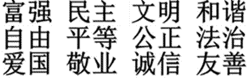
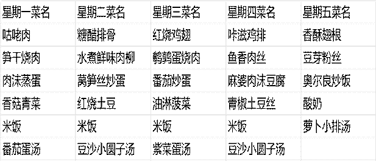

周恩来周报争做新时代好少年书写惠阴美好篇章
头条新闻：吴 热点讨论：土铭的红笔漏墨，壤和草哪个更教务处惊现 重要？
“血案”！ 在近期的近日，初 心理课上，初一（1）班教室 一（1）班进行内突发惊人一 了一场别开生幕：吴铭的红 面的辩论赛，笔因长时间使 主题为：“土用，墨水溢出， 壤和草哪个更洒满试卷与课 重要？”正方桌，令人误以 认为，没有厚为发生“血案”！重的土壤，草同学倒吸 便无法扎根成一口凉气，随 长；反方则坚即冲进教务处 称，草的自信请求“支援”， 才能让世界更直到发现只是 具生机与活力。笔漏墨才松了 经过激烈一口气。同学 交锋，双方都们将此次事件 提出了颇具哲戏称为“红环 理的观点，最章鱼浩劫” 终同学评委团
本报提醒 一致认为—— 各位同学，文 土壤和草相辅具使用需注意 相成，自卑与安全，红笔过 自信并非对立，度充墨可能会 自卑与自信皆造成“视觉误 是人性的养分导”，请合理 你认为呢？欢使用，避免不 迎投票表决！必要的“恐慌”！
学风建设：班级内多人抄作业，老师震怒！近日，有老师在作业检查时发现，同班多位同学作业内容雷同，甚至连错误都一模一样，疑似抄袭现象严重。对此表示： “作为学生，独立思考是学习的基石，盲目抄袭不仅损害自身学习能力，还破坏了班级的学风。” 校方提醒同学们，学习贵在思考，诚实守信是做人之本。望各位同学引以为戒，拒绝抄袭，认真对待每一次作业！小道消息：3 月24春游即将来袭？
|
——李军昊李军昊在坐地铁时，碰到有“内部人士”透露，3 月24日学校可能会组织春游 |
活动，目的地 示“尚未接到尚未公布。对 正式通知”。此，部分同学 本报将持已经开始期待，续跟进，若有学生期待与疑 最新消息，将虑交织，事件 第一时间为大扑朔迷离。而 家报道！敬请部分老师则表 关注！ |
1. Why did students think there was a "bloody case"?
A. Someone fought.
B. A red pen leaked ink. C. A student drew a picture.
D. It was a Halloween joke. 2. What did the debate conclude? A. Soil is more important. B. Grass is more important.
C. They should compete forever.
D. They need each other.
3. What made the teacher angry?
A. Late homework.
B. Copying homework.
C. Loud noise in class.
D. A broken window.
 |
B. On the subway.
C. From his teacher.
D. In a library.
1. “红环章鱼浩劫”在文中的含义是什么？请结合语境简要概括。（2 分） 2. 辩论赛中“土壤与草” 的象征意义是什么？作者借此表达怎样的观点？（3 分）
3. 校方对抄袭作业事件的态度是什么？请用两个四字词语概括。（2 分）
4. 从词语运用角度赏析文中画线句的表达效果： “学生期待与疑虑交织，事件扑朔迷离。”（3 分）
5. 结合全文，谈谈你对
“自卑与自信皆是人性的养分”这句话的理解
特别提醒：九点出太阳周一 多云转晴 2-10℃ 周二 晴转多云 1-11℃ 周三 晴 5-13℃ 周四 晴转多云 8-19℃ 周五 晴 11-22℃